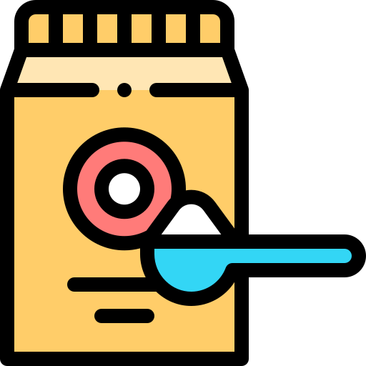
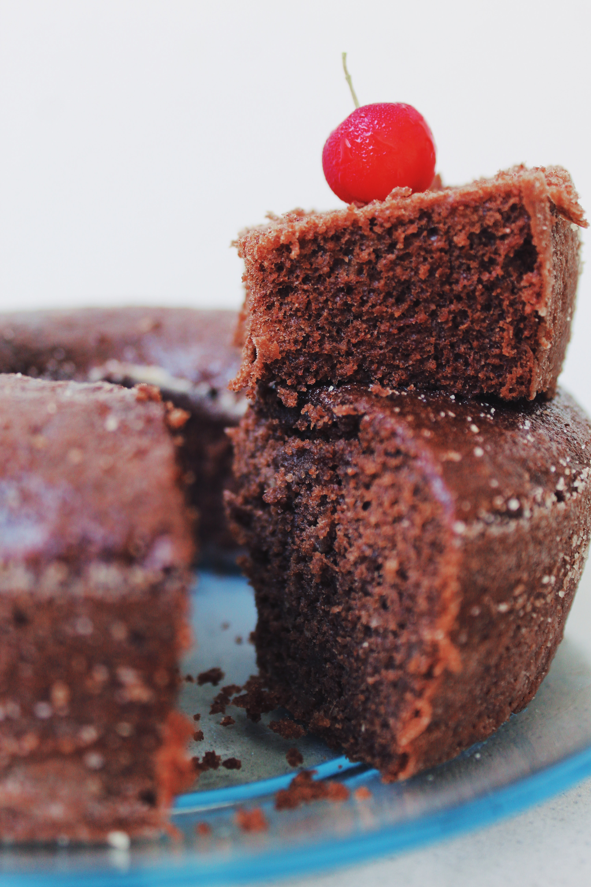
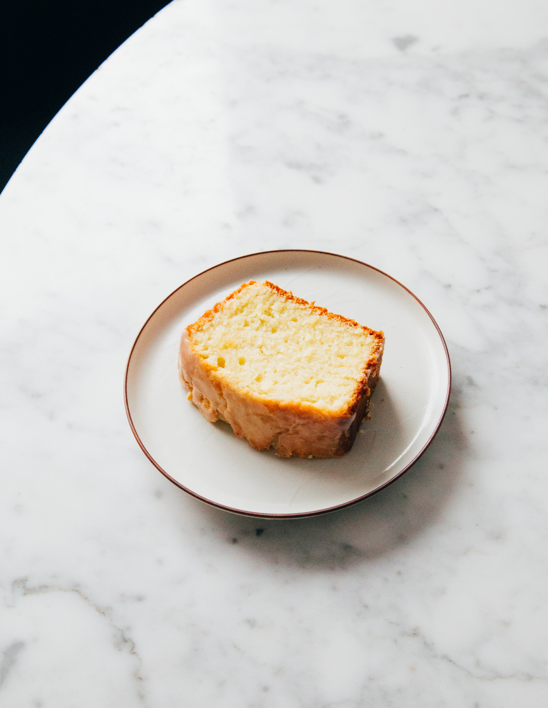

What is a cupcake?
According to the BAKERpedia, a cupcake is a small cake baked in paper cups. Regarding the preparation, the recipe for cupcakes closely resembles that for cakes. It begins creaming butter and sugar to incorporate air into the mixture. Later adding some other ingredients, we can obtain a gorgeous and fluffy batter.

A good cupcake has a porous, moist, fluffy and light texture. To this, we need some elemental ingredients such as baking powder that allow the production of microbubbles and a few others that give it the necessary structure as flour, eggs or fat.
Ingredients

It is necessary to cream the butter with sugar for the generation of foam. That will give way to the light texture of the cake. This cremation allows the incorporation of bubbles into the mixture that will expand with the oven's heat. These bubbles, the steam and, the carbon dioxide (CO2) from the baking powder/baking soda reaction gives the preparation the characteristic fluffy and airy texture. With cremation, the sugar crystals also allow the formation of bubbles that remain in the fat of the butter, forming a kind of soft structure.

Later with the incorporation of eggs, these ingredients interfere with gluten formation by interacting directly with the proteins that make it up. This previous interaction prevents the two proteins that compose gluten (gliadin and glutelin) from interacting between them. But not only that, all these ingredients add sweetness, moisture, body, and richness to cupcakes.

Then, the flour helps to stabilize the spongy batter to prevent it from collapsing when baked. If correctly baked, the structure formed by the protein molecules of the egg, the flour and the formation of air bubbles given by creaming the fat and sugar is maintained when it cools down.

As for the leavening agents, these allow having a porous and spongy texture. The leavening agents produce gas carbon dioxide (CO2). The most common leavening agents are baking soda and baking powder. Each of them works under different conditions. So, it is not possible to replace one and the other indiscriminately.

The baking soda produces carbon dioxide, water and salt in the presence of an acid such as buttermilk, sour cream, molasses, lemon juice or cream of tartar.
On the other hand, baking powder contains a mixture of three components: baking soda, one or more acids and, a filler or diluent. The filler reduces the probability that baking soda and acids can react. Because this acid is insoluble in the mixture at room temperature, one of the acids in the mix only reacts in the presence of heat.

This reaction produces millions of tiny bubbles of carbon dioxide gas in the batter. The bubbles become the desired soft and light structure when cooking the cupcake in the presence of the oven's heat.